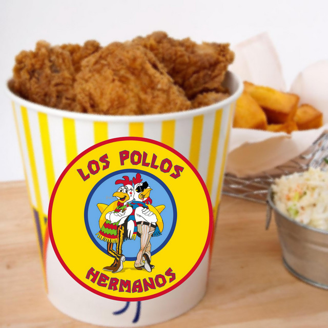

Recipe Classic Fried Chicken

Dish 1: Classic Fried Chicken
Specialty: The fried chicken at Los Pollos Hermanos is renowned for its crispy coating, juicy
meat, and secret
blend of spices that Gus Fring uses to maintain his "business cover."
Ingredients:
- 1 whole chicken (cut into 8 pieces) or chicken drumsticks
- 2 cups all-purpose flour
- 1 tsp paprika
- 1 tsp garlic powder
- 1 tsp onion powder
- 1 tsp cayenne pepper
- 1 tsp black pepper
- 1 tsp salt
- 1 tsp oregano
- 1 tsp thyme
- 2 cups buttermilk
- 2 eggs
- Oil for frying (vegetable or peanut oil)
Instructions:
-
Marinate the Chicken:
- In a bowl, whisk buttermilk and eggs.
- Submerge chicken pieces and refrigerate for at least 4 hours (overnight is better).
-
Prepare the Coating:
- Mix flour, paprika, garlic powder, onion powder, cayenne pepper, black pepper, salt, oregano,
and thyme in a large bowl.
-
Coat the Chicken:
- Remove chicken from buttermilk, letting excess drip off.
- Dredge in the flour mixture, ensuring even coating. Repeat for extra crispiness.
-
Fry the Chicken:
- Heat oil in a deep fryer or heavy pot to 350°F (175°C).
- Fry chicken in batches for 12-15 minutes, turning occasionally, until golden brown and cooked
through.
-
Serve Hot
- With your favorite salsa or hot sauce.
Homepage